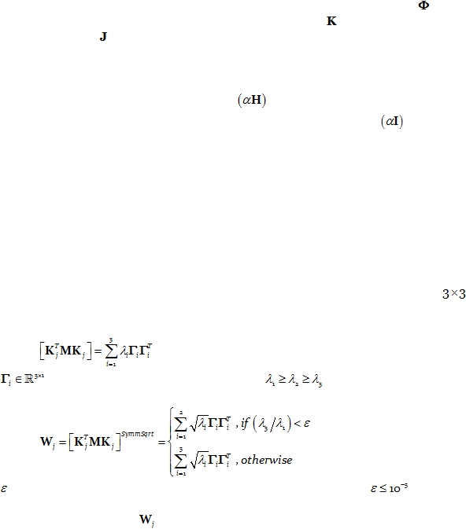

|

Cite as: “R.D. Pascual-Marqui: Discrete, 3D distributed, linear imaging methods of electric neuronal activity. Part 1: exact, zero
error localization. arXiv:0710.3341 [math-ph], 2007-October-17, http://arxiv.org/pdf/0710.3341 ”
Page 12 of 16
Finally, the diagonal matrix W produced by this algorithm should be plugged into the
pseudoinverse matrix T (in Eq. 52). This is denoted as the eLORETA inverse solution.
7.4.
eLORETA for MEG with fully unknown current density vector field
This case follows the same derivations as given above for the case “EEG with fully
unknown current density vector field”.
The forward MEG equation has similar form to Eq. 14. For the MEG case,
would
represent the magnetometer or gradiometer measurements,
would represent the
magnetic lead field, and
is exactly the same current density vector field (common to both
EEG and MEG).
In the MEG case,
there is no reference electrode constant to be accounted for. The
consequence is that the EEG regularization term
appearing in some of the equations
above (Eq. 37 to Eq. 44) must be changed to the MEG regularization term
, where I is
the identity matrix.
In the case of spherical head models, care must be taken in the MEG case because
only the tangential part of the current density vector field is non-silent. The same occurs in
realistic head models, in areas that are quasi-spherical. This implies that all calculations at
the voxel level have only rank=2 for MEG. Therefore, inverse and symmetric square-root
matrix computations should be made via the singular value decomposition (SVD), ignoring
the smallest eigenvalue if it is numerically negligible relative to the largest eigenvalue.
In particular, consider the algorithm involving Eq. 44 and Eq. 45. Note that Eq. 44
makes use of the inverse of the weight matrix, which consists of the inverses of all
block-diagonal submatrices. In the quasi-spherical MEG case, these submatrices have
rank=2. Referring to Eq. 45, consider the SVD of the matrix of interest:
Eq. 60:
where
are the orthonormal eigenvectors, and
are the eigenvalues. Then
Eq. 45 should be replaced by:
Eq. 61:
where
depends on the numerical precision of the calculations (typically
).
Moreover, the inverse of
(see Eq. 61), which is needed in Eq. 44, and later on after
convergence in Eq. 37
for the final inverse solution, should be calculated as the Moore-
Penrose pseudoinverse (ignoring the smallest eigenvalue if it is numerically negligible
relative to the largest eigenvalue).